df_nonlin |>
ggplot(aes(x=x1, y=y)) +
geom_point(size = 5) +
geom_smooth(method = 'lm',
colour = 'blue', se = FALSE, linewidth = 3) +
geom_smooth(method = 'loess',
colour = 'red', se = FALSE, linewidth = 3)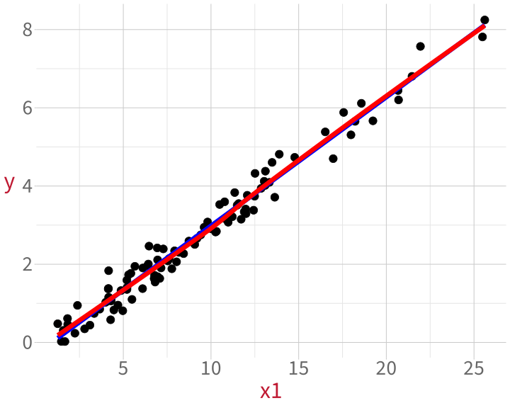
Data Analysis for Psychology in R 2
Department of Psychology
University of Edinburgh
2025–2026
What does a linear model assume is true about the data that it models? (Four assumptions)
What three properties of a single data point might affect a linear model’s estimates? How can we diagnose each property?
What relationship between predictors do we want to avoid? How can we diagnose it?
| Assumption | Looks fine | Suspicious | |
| L | Linearity: The association between predictor and outcome is a straight line. | 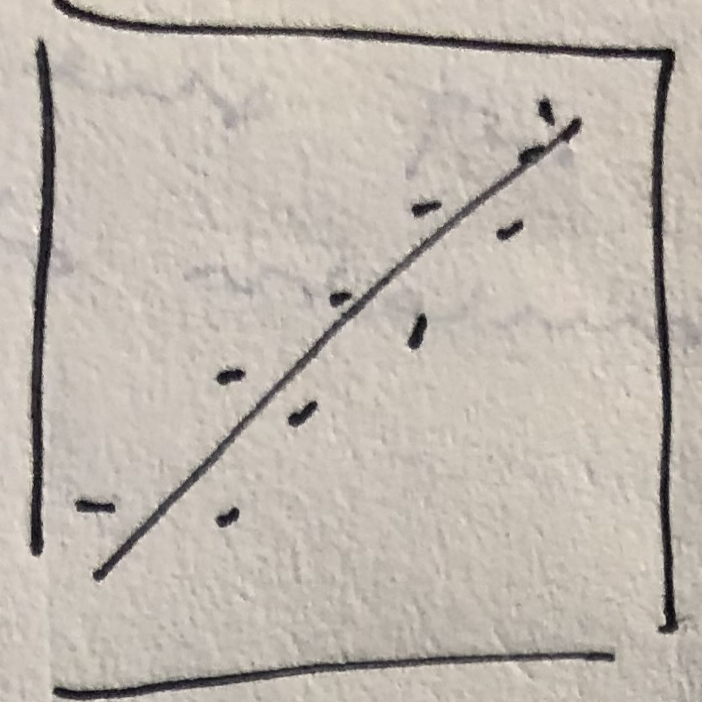 | 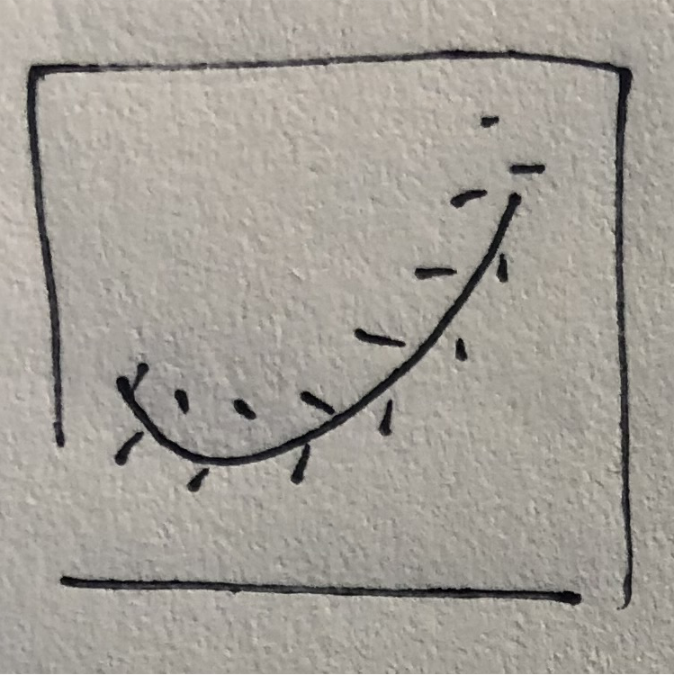 |
| I | Independence: Every data point's error is independent of every other data point's error. (Until DAPR3, we'll assume this is true as long as we have between-participant data.) | ||
| N | Normally-distributed errors: The differences between fitted line and each data point (i.e., the residuals) follow a normal distribution. | 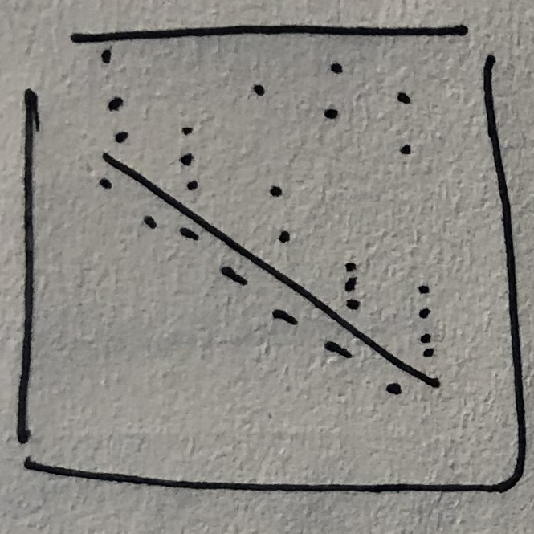 | |
| E | Equal variance of errors: The differences between fitted line and each data point (i.e., the residuals) are dispersed by a similar amount across the whole range of the predictor. | 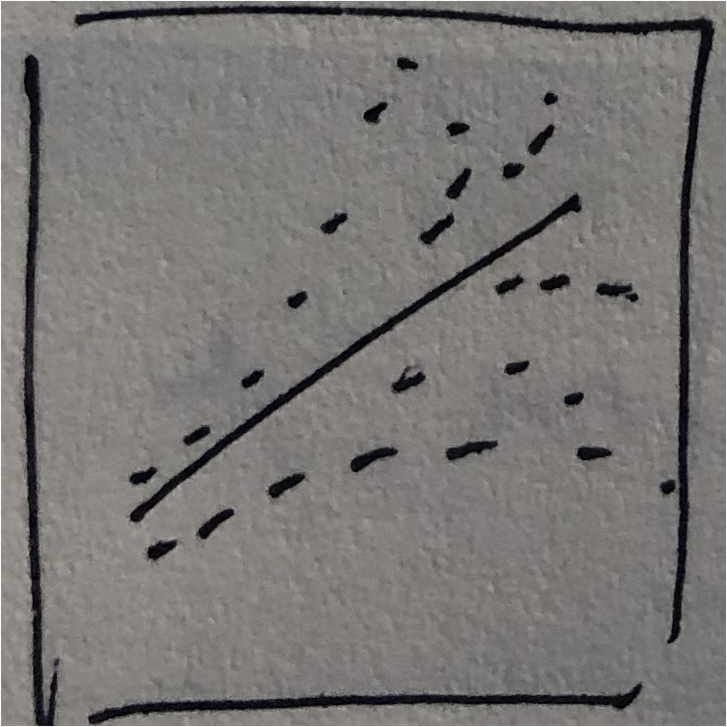 |
Make a scatterplot with a straight line and a “LOESS” line (LOcally Estimated Scatterplot Smoothing).
The linear variable:
You want the LOESS line (method = 'loess', red) to stick close to the straight line (method = 'lm', blue). Deviations suggest non-linearity.
With multiple predictors, we need to get slightly more complex.
Now we to hold the other predictors constant while we look at each one in turn.
The solution: Component+residual plots (aka “partial-residual plots”).
Component: The association between one particular predictor and the outcome, with all the other predictors held constant. In other words, each predictor’s contribution to the overall linear model.
Residual: The differences between the line the model predicts and the actual observed data points.
Basically, we can look at the linearity of each predictor without any of the other predictors getting in the way.
A component-residual plot shows:
Again, we want the LOESS line to match the straight line as closely as possible. Deviations suggest non-linearity.
How much of a deviation is a problem? This is kind of a judgement call.
In order of increasing spiciness:
Keep the variable as-is and report the non-linearity in your write-up. A good solution if the deviation isn’t huge.
Transform the variable until it looks more linear (e.g., what if you take the exponential with exp()? the logarithm with log()?)
In DAPR3, you’ll see how to include so-called “higher-order” regression terms, which let you model particular kinds of curves.
Beyond DAPR3: You can capture basically any non-linear relationship using “generalised additive models” (GAMs).
| Assumption | Looks fine | Suspicious | |
| L | Linearity: The association between predictor and outcome is a straight line. |
||
| I | Independence: Every data point's error is independent of every other data point's error. (Until DAPR3, we'll assume this is true as long as we have between-participant data.) | ||
| N | Normally-distributed errors: The differences between fitted line and each data point (i.e., the residuals) follow a normal distribution. | ||
| E | Equal variance of errors: The differences between fitted line and each data point (i.e., the residuals) are dispersed by a similar amount across the whole range of the predictor. |
If you roll a 20-sided die at 9 am everyday, you’ll generate a lot of values between 1 and 20.
These values are totally unrelated to each other from one day to the next.
What you roll today is not correlated at all with the number you rolled yesterday.
If you take the temperature in Edinburgh at 9 am everyday, you’ll also generate values between 1 and 20 (ish).
These values are related to each other from one day to the next.
A colder temperature yesterday is more likely to go with a colder temperature today.
This is an example of autocorrelation.
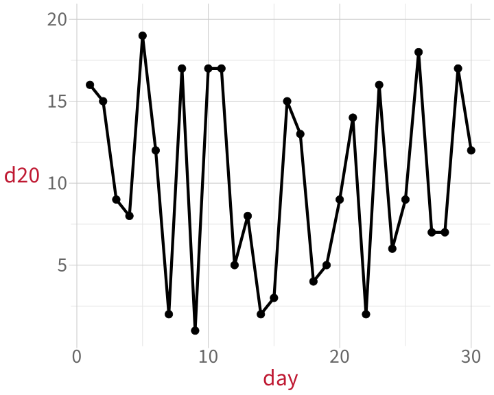
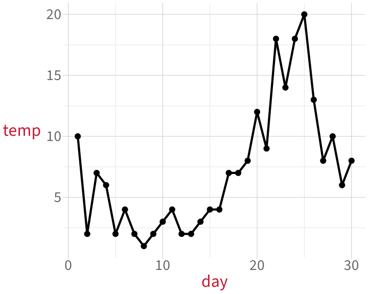
The autocorrelation function (ACF) quantifies how much each data point is correlated with each data point that came before it.
Lag: How many data points are we looking back by?
This was an illustration using autocorrelated data points.
Strictly speaking, the linear model assumes that it’s the errors, not the data points, that are independent—but where data points are autocorrelated, then often the errors are too.
… is when multiple observations are gathered from the same source.
For example:
That said:
Until DAPR3, you can assume that errors are independent as long as the experimental design is between-subjects (i.e., as long as each person only contributes data to one experimental condition).
In order of increasing spiciness:
Keep the variable as-is and report the non-independence in your write-up.
In DAPR3, you’ll learn how to tell a model that some data points probably behave more like one another than they behave like others by including so-called “random effects” (terrible name).
Beyond DAPR3: Use models that build in specific relationships between errors (e.g., autoregressive models to deal with autocorrelation).
| Assumption | Looks fine | Suspicious | |
| L | Linearity: The association between predictor and outcome is a straight line. | ||
| I | Independence: Every data point's error is independent of every other data point's error. (Until DAPR3, we'll assume this is true as long as we have between-participant data.) | [indep] | [autocorr] |
| N | Normally-distributed errors: The differences between fitted line and each data point (i.e., the residuals) follow a normal distribution. | ||
| E | Equal variance of errors: The differences between fitted line and each data point (i.e., the residuals) are dispersed by a similar amount across the whole range of the predictor. |
To find the residuals—the differences between the fitted line and each data point—we need a fitted line.
So first, fit a model.
Now we have a couple of options:
With a histogram of the residuals, we can eyeball how normally-distributed they appear.
Normally-distributed errors:
Matches the bell curve shape pretty well.
We can compare the model’s residuals to what the residuals WOULD look like in a world where they were perfectly normally-distributed.
This is what a “quantile-quantile plot”, a Q-Q plot, does. The dots should follow the diagonal line.
Normally-distributed errors:
Top right: a few abnormally large residuals.
A perfect match to the diagonal is rare. Ask: How big is the mismatch?
[x thru “keep calm and carry on”]
If errors aren’t normally distributed, then a model which assumes they are will produce weird and biased estimates:
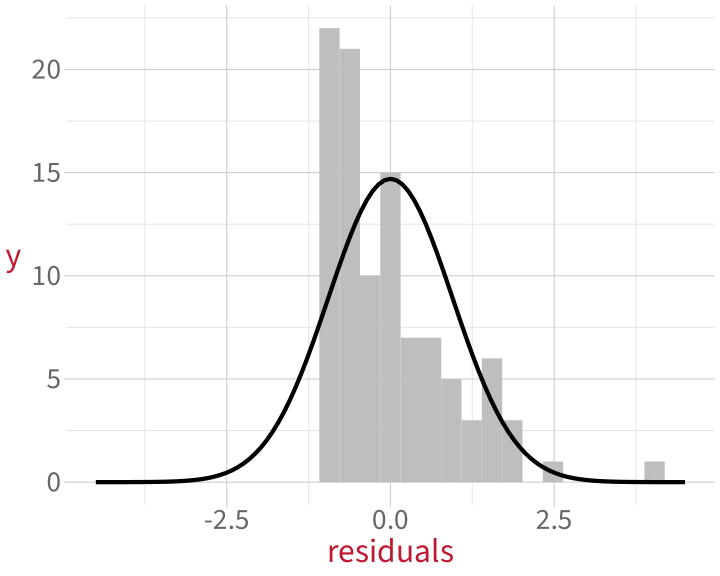
Next week: we’ll learn how to get around this problem using a method called bootstrapping.
Diagnosing unusual properties of
individual data points:
Diagnosing undesirable relationships
between predictors:
TODO: insert photo of diagrams
| Unusual property of a data point | Looks fine | Suspicious |
| Outlyingness: Unusual value of the outcome. | 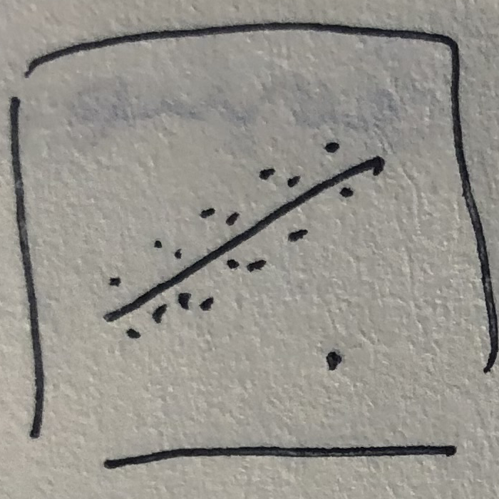 | |
| High leverage: Unusual value of the predictor. | 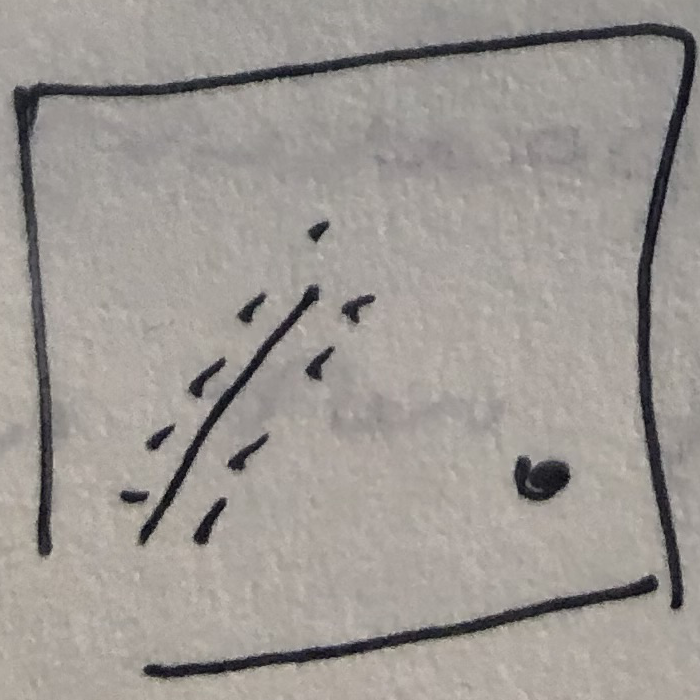 | |
| High influence Unusual values of both the outcome and the predictor. | 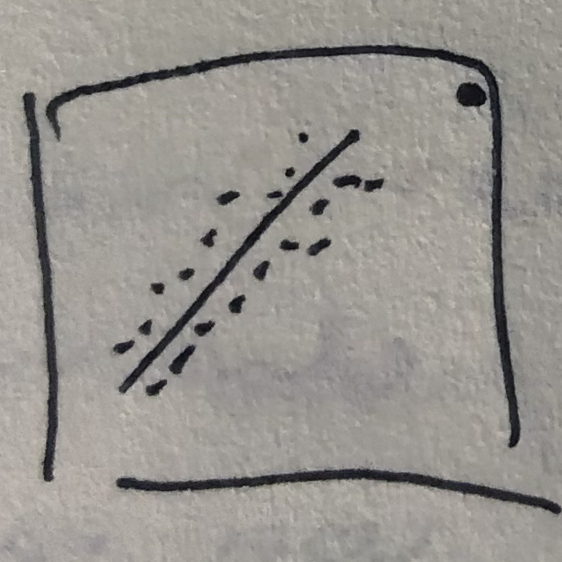 |
TODO intutiion
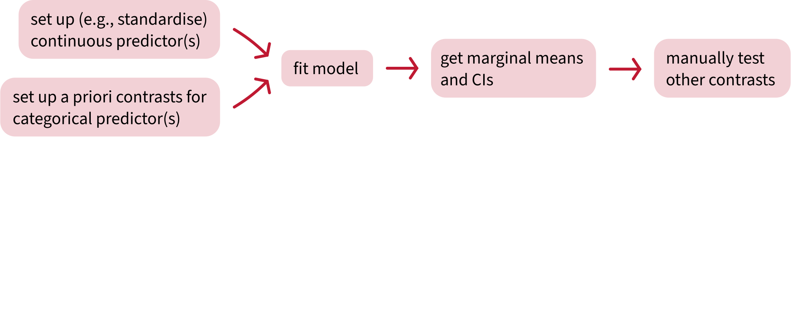
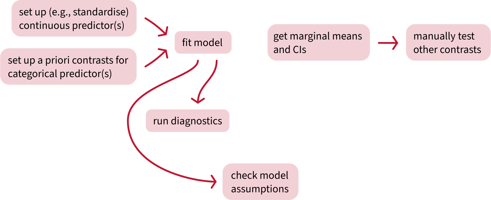
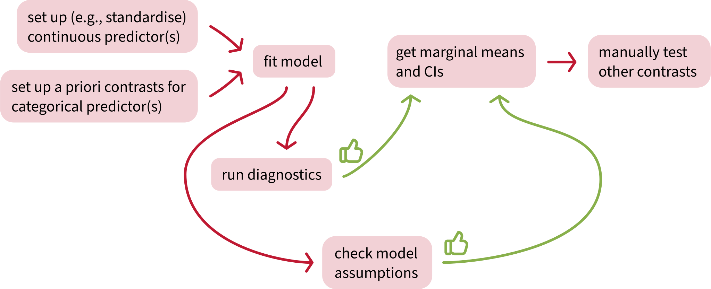
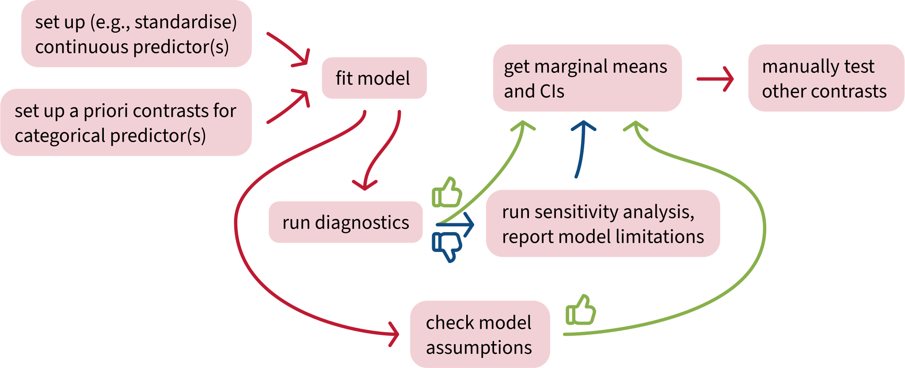
What does a linear model assume is true about the data that it models? (Four assumptions)
What three properties of a single data point might affect a linear model’s estimates? How can we diagnose each property?
What relationship between predictors do we want to avoid? How can we diagnose it?

Attend your lab and work together on the exercises

Help each other on the Piazza forum

Complete the weekly quiz

Attend office hours (see Learn page for details)